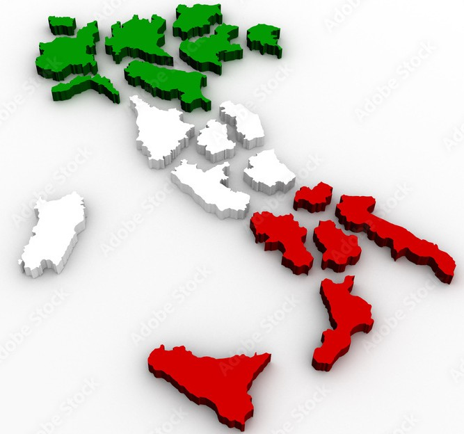

Siamo il partner tecnico di riferimento per professionisti del settore edile, studi tecnici e amministratori in tutto il territorio nazionale.
Offriamo un supporto tecnico specializzato che integra le competenze di architetti, ingegneri, imprese e amministratori: siamo il tassello mancante per risolvere le problematiche più complesse legate ad acqua, umidità e infiltrazioni.
Disponiamo di una rete di tecnici e collaboratori su tutto il territorio nazionale. Operiamo con la stessa qualità e professionalità ovunque, dalle grandi città ai centri più piccoli.

Sei un professionista del settore e cerchi un partner affidabile per la diagnostica non invasiva? Contattaci per discutere modalità di collaborazione.